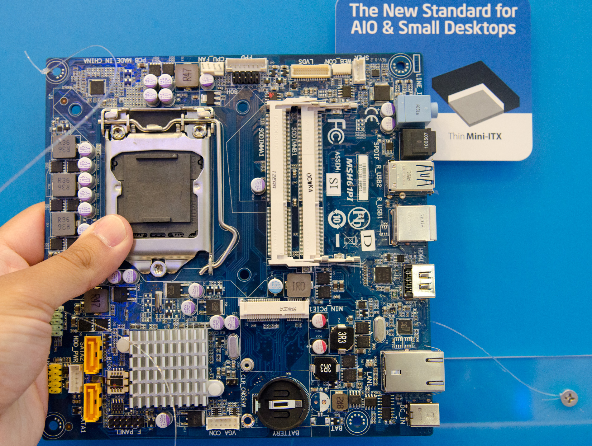

Hardware notes¶
- Auteur
J.Soranzo
- Date
Novembre 2019
- Societe
VoRoBoTics
- Entity
VoLAB
Sous-articles:
- Robotique
- FPGA*
- Raspberry pi*
- NUCLEO board *
Hardware tdm
{kind=link}
CPU Architecture¶
Harvard et Von Neumann
Harvard : computer architecture with separate storage and signal pathways for instructions and data
En général, aujourd’hui on est plus souvent confronté à Modified Harvard architecture dans le sens où les données et les instructions partage souvent les mêmes memoires mais sont traités dans des caches différents.
Von Neumann architecture, where program instructions and data share the same memory and pathways.
Source wikipedia Harvard Archi 1
Teensy (3.5)¶
LED power : je pense qu’il n’y en a pas. J’en ai pa vu sur le schéma et pas trouvé trace sur le forum. Rien non plus dans les carac.
Température d’utilisation : à priori -40/+85°C seule inconnu : l’oscillateur. ref : 6360 T8406 ? 16MHz
Processeur : MK64FX512VMD12 120 MHz Cortex-M4F
3.3V signals, 5V tolerant
512K FLASH, 256K RAM, 4K EEPROM, 17 timer
Connecteur Wifi¶
IPEX ou IPX : petits connecteurs coaxiaux des cartes FriendlyArM nanoPC-T4 par exemple MHF connecteur
SMA connecteur des antennes Wifi
ESP boards¶
ESP8266¶
Attention toutes les broches ne sont pas utilisables pour faire ce qu’on veut! Il y a des contrainte.
Monoceur 32 bits
Voir sur le site randomTutorial ESP8266 pinout 3
ESP32¶
DFRaobot sort sa firebeetle 4 à 6.9$
Existe en WeMOS qu’on trouve facilement sur Ebay, Aliexpress et Amazon pour environ 5€ livré. Mais dans cette version la carte n’est pas vraiment breadboard frendly les 2 rangées côte à côte c’est pas géant.
En dual in line on en trouve facilement même sur Amazon prime à 10€ lol ou 4.2€ livré sur Aliexpress 5
ESP32 vs ESP8266¶
Sur Arduinotutoriels 6
En résumé, ESP32 ajoute Dual core, Bluetooth 4.0 LE, 2 SPI et 1 I2C, 2 canaux ADC 8 bits et 19 GPIO
Note
Rappel : on peut faire tourner freeRTos sur un ESP.
SATA to USB3¶
Solution testée et maintes fois utilisées sur AMAZON SABERENT 7 à 9€90
MIPI CSI prolangateur¶
Pi Camera HDMI Cable Extension 8
Subtilitées sur Petit Studio 9
Et enfin sur le site de BATC 11
LES CAPTEURS¶
Eau¶
Analog TDS Sensor/Meter for Arduino 12 26/02/2020
TDS (Total Dissolved Solids) indicates that how many milligrams of soluble solids dissolved in one liter of water.
SBC¶
Single boards compouter
Il y a les petites
Friendly arm 15 (au 17/04/2021 : 23 cartes sur le site officiel)
Raspberry pi
Et il y a les grosses qui ressembles plus à des carte mère de PC, SBC Hautes performances.
Elles coûtent souvent plusieurs centaines d’Euro…
{kind=link}
Comme la NVIDIA Jetson Xavier ou encore :
{kind=link}
Sous groupe Friendlyarm¶
A noter qu’il ont leur propre boutique vs Orangepi sur aliexpress.
Je les trouve mieu documenté à l’iimage de ce site nanopi.io 16
NanoPi
M1 Plus: Allwinner H3, 1G DDR3, 8Gemmc, WifiBT, 2USB2, HDMI, GEth, mSD, 60x64, 38$
M4 : RK3399, 2G DDR3, PCIe, eMMCsocket, WIFI 2et 5G, BT4.1, 3USB3.0, MIPI, CSI, HDMI, GEth, mSD, 56x85, 50$
B: 70$, 2USB2, 2USB3, 1 seul prise antmSD,
V2 : RK3399, 4G DDR4, PCIe, eMMCsocket, WIFI 2et 5G, BT4.1, 3USB3.0, MIPI, CSI, HDMI, GEth, mSD, 56x85, 80$
Neo
LTS: Allwinner H3, 256/512 DDR3, , 1 usb2.0+2, 10/100Eth, mSD, 40x40, 16$, 24pinGPIO
Air-LTS: H3, 512M DDR3, **eMMC8G**, wifiBT, DVP cam, mSD, 40x40, 19.99$,24pinGPIO
Core-LTS: GPIO 2x 24 +10 (tout est dans des GPIO) Allwinner H3, 256/512DDR3, emmc 4/8G, mSD, 40x40, 20$
NEO4: RK3399, 1G DDR3, emmc socket, 1USB2+1USB3.0, miniCSI, WIFI4G, BT4.0, GEth, mSD, 45x60, 50$
NEO3-LTS: RK3328,1G/2G DDR4, 1USB3.0, 1USB2.0 header, GEth, mSD, 48x48, 39$, 26pin GPIO
DUO2: Allwinner H3, 512M DDR3, WIFI 2G, BT4.0, USB2et 3 host exposed, CSI, **25.4x55** , 19.99$
Carrier board
R- à on avis pour Router
R1: Allwinner H3, 512/1G DDR3, 8GeMMc, WIFI, BT4.0, prise SMA, Eth 10/100, GEth, pas de vid, 2USB2.0, mSD,50.5x60, 32$
R1S: pas compris boitier jaune ??? 27$
R2S: RK3328, 1G DDR4, USB2.0, pas de vid,Eth 10/100, GEth, mSD, 66x66, 48$
R4S: RK3399, 1/4G DDR4, 2USB3.0, pas de vid, Native GEth+ GEth, mSD, 66x66, 55$, pas de GPIO
Fire
2A-LTS S5P4418 (4xA9), 512M DDR3, 1 usb2.0, RGB LCD port, Cam, mcriHDMI, GEth, mSD, 75x40, 24.99$, 40pin GPIO (cRPi)
3-LTS: S5P6818 (8xA53), 1GDDR3, 1 usb2.0, RGB LCD port, Cam, microHDMI, GEth, mSD, 75x40, 45$, 40pin GPIO (cRPi)
nanoPC
T2: S5P4418, 1G DDR3, 8Gemmc, Wifi /n, BT4.0, 4xUSB2.0, DVP/CSI cam, microHDMI, GEth, 60x100,65$, 30pin GPIO
T3 Plus: S5P6818, 2GDDR3, 16Gemmc, Wifi /n, BT4.0, 4USB2.0, HDMI, DVP, 2CSI, GEth, mSD, 64x100, 85$, 30pin GPIO
T4: RK3399, 4G DDR3, emmc, USB3.0, USBC/DP, HDMI2.0, M2.M (NVME), CS1, CS2, eDP, DSI1, GEth, mSD, 64x100, 139$
Core
4418: S5P4418, 1GDDR3, 8Gemmc, Wifi /n, BT4.0, RGB LCD port, LVDS, GEth, mSD, 45x78, 49$ 50pin GPIO
6818: S5P6818, 1GDDR3, 8Gemmc, Wifi /n, BT4.0, RGB LCD port, LVDS, GEth, mSD, 45x78, 45$ 50pin GPIO
Zero Pi : Allwinner H3, 512MB DDR3, USB2.0GEth, 17$
Prix indicatif au 17/04/2021
Chez Orangepi¶
2G Iot: A5, 256 DDR2, SIM 2G, 512M Flash, Wifi BT, 1USB2.0, LCD, CSI, mSD, 42x67, 11.82$, 40pin GPIO
3G-IOT-A: MT6572, 256 DDR2, SIM 3G, 512M emmc Flash, Wifi BT, 1USB2.0, LCD, CSI, mSD, 52x68, 20$, 40pin GPIO
3G-IOT-B: MT6572, 512 DDR2, SIM 3G, 4G emmc Flash, 1USB2.0, LCD, CSI, mSD, 52x68, 23$, 40pin GPIO
4G-IOT : MT6737 (4xA53), 1G DDR3, SIM 4G, 8Gemmc, Wifi BT, 55x85, 40pin GPIO
Lite
Lite 2
One
One Plus
OPI Win plus
PC
PC Plus
PC2
Pi I96
Pi Prime
PI3
PI4
PI4B
Plus 2E
R1
R1 Plus
RK3399
Zero
Zero LTS
Zero Plus2
Zero2 : H616 4 A53, 1G DDR3, Wifi BT5.0, microHDMI 3USB2.0
Chez Bananapi¶
- ::
M2 M3 M4 M5
{kind=link}
{kind=link}
{kind=link}
Weblinks¶
- 1
- 2
- 3
https://randomnerdtutorials.com/esp8266-pinout-reference-gpios/
- 4
- 5
- 6
- 7
- 8
https://www.tindie.com/products/freto/pi-camera-hdmi-cable-extension/
- 9
http://petitstudio.blogspot.com/2015/05/hdmi-cables-are-not-all-same.html
- 10
https://www.amazon.com/Arducam-Extension-Module-Raspberry-Specific/dp/B06XDNBM63
- 11
- 12
- 13
- 14
- 15
- 16
- 17
https://electronics.stackexchange.com/questions/78223/3-3v-high-side-switch?rq=1
- 18